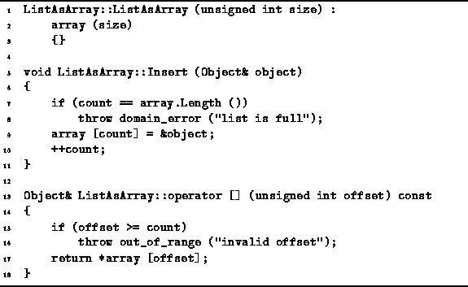

Data Structures and Algorithms
with Object-Oriented Design Patterns in C++
Data Structures and Algorithms
with Object-Oriented Design Patterns in C++
Program  gives the definitions of the
constructor and Insert member functions
of the ListAsArray class.
The constructor takes a single argument which specifies
the length of array to use in the representation of the ordered list.
Thus if we use an array-based implementation,
we need to know when a list is declared
what will be the maximum number of items in that list.
The constructor initializes the array variable as
an array with the specified length.
The running time of the constructor is clearly O(1).
gives the definitions of the
constructor and Insert member functions
of the ListAsArray class.
The constructor takes a single argument which specifies
the length of array to use in the representation of the ordered list.
Thus if we use an array-based implementation,
we need to know when a list is declared
what will be the maximum number of items in that list.
The constructor initializes the array variable as
an array with the specified length.
The running time of the constructor is clearly O(1).

Program: ListAsArray Class Constructor, Insert Member Function and Subscripting Operator Definitions
The Insert member function is part of the interface of all searchable containers. I.e., it is a pure virtual function declared in the SearchableContainer class. Its purpose is to put an object into the container. The obvious question which arises is, where should the inserted item be placed in the ordered list? The simple answer is, at the end.
In Program we see that the Insert
function simply adds the new item to the end of the list,
provided there is still room in the array.
Normally, the array will not be full,
so the running time of this function is O(1).
Program also gives the definition
of the subscripting operator, operator[],
which take a subscript of type unsigned int.
This function simply returns a reference to the object
in the ordered list at the specified position.
In this case, because the type unsigned int is used,
the position is specified using a non-negative,
integer-valued subscript expression.
The implementation of this function is trivial--it simply makes use of the subscript operator provided
by the Array<T> class.
Assuming the specified position is valid,
the running time of this function is O(1).
 Copyright © 1997 by Bruno R. Preiss, P.Eng. All rights reserved.
Copyright © 1997 by Bruno R. Preiss, P.Eng. All rights reserved.